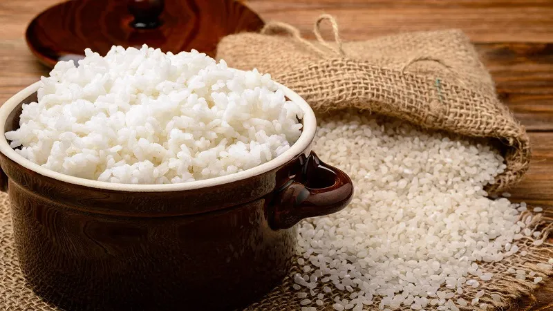

Receitas Deliciosas
Arroz soltinho

1º passo
Verifique a disponibilidade dos itens a seguir:
1 Fogão
1 Panela de 30cm de diâmetro e redonda
1 colher de plástico
1 garrafa de água potável, para cozinhar o arroz
1 pacote de arroz branco de 1kg, sem marca especifica
1 óleo de soja de 900ml
1 pacote de sal de 1kg
1 pote que contenha as medidas em ml para separar a quantidade correta para preparar o arroz
Se não houver os itens necessários seguir o 2º passo e logo após o 1º passo
2º passo
É necessário uma quantia de dinheiro para adquirir os itens abaixo, quantia certa será calculada de acordo com o valor visto no mercado ou loja de suprimentos
Dirija-se ao local escolhido ou comre online
Compre os itens necessários em um mercado ou loja de suprimentos
1 Fogão elétrico ou á gás
1 Panela de 30cm de diâmetro e redonda de fundo triplo para não grudar o arroz
1 colher de plástico para não riscar o fundo da panela
1 garrafa de água potável para cozinhar o arroz
1 pacote de arroz branco de 1kg, sem marca especifica
1 óleo de soja de 900ml
1 pacote de sal de 1kg
1 pote que contenha as medidas em ml para separar a quantidade correta para preparar o arroz